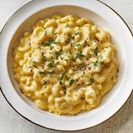

Home
MAC'N'CHEESE

Description
This is a simple comfy food which tastes super good
Ingredients
- Macaroni Pasta
- Milk
- Cheese
- Butter
Steps
- Boil the pasta in water for 10 min or until you feel its cooked and add salt to the water
- Take a pot and pour milk and keep it in low heat and add the cooked pasta after 2 min
- Stir the pot for 5-7 minutes then add Cheese(grate it and add)
- add some butter and stir until you can feel the creamy texture
- pour it into a plate and enjoy your creamy fresh Mac'N'Cheese